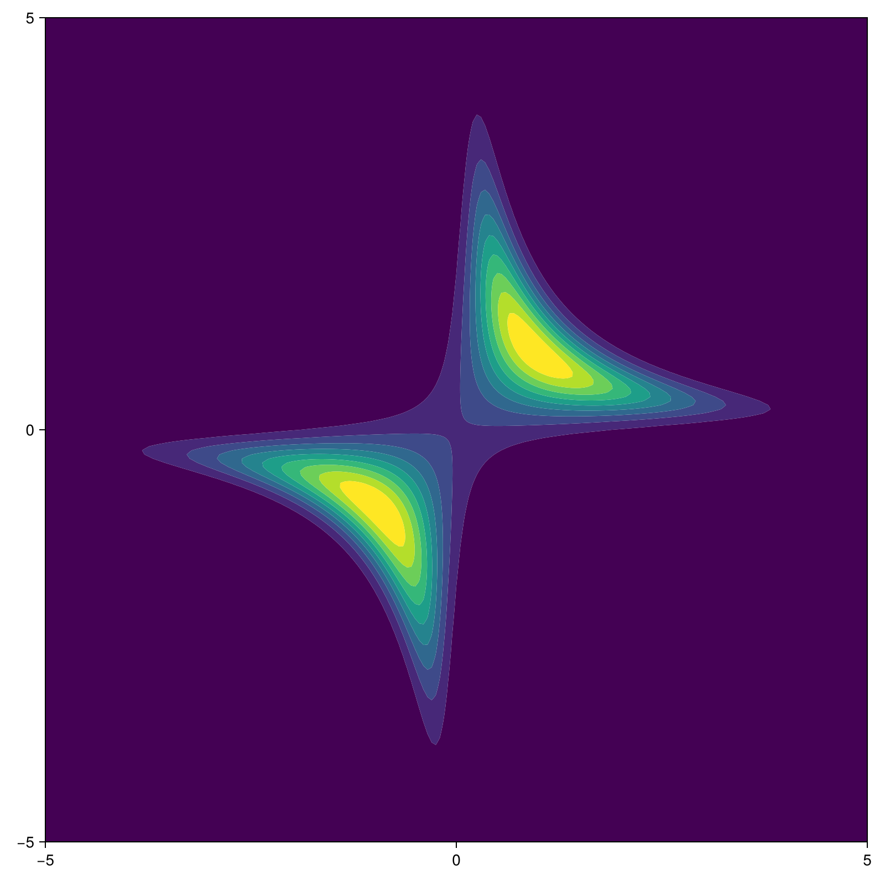

Example: LFI
This page showcases the use of BOLFI.jl on a simple toy problem. The source code for the showcased problem is also available at github.
The example requires the following packages to be loaded.
using BOLFI
using BOSS
using Distributions
using OptimizationPRIMAProblem Definition
In our toy problem, our goal is to infer two parameters $x \in \mathbb{R}^2$. We defined the true unknown mapping $f_t(x) = g_t(x) = \prod x$.
f_(x) = x[1] * x[2](Note that we refer to the parameters as x here, inteas of $x$, to be consistent with the source code of BOLFI.jl.)
We have observed the single observation $\prod x = 1.$.
z_obs = [1.]The experiment is assumed to follow a Normal likelihood with observation noise deviation $\sigma_f = 0.5$.
likelihood = NormalLikelihood(; z_obs, obs_std=[0.5])We define the noisy simulation function $g(x)$. The unknown simulation noise deviatoin is set to $\sigma_g = 0.001$.
function simulation(x; noise_std=0.001)
y = f_(x) + rand(Normal(0., noise_std))
return [y]
endThen we need to define the objective function for the Gaussian processes to query data from. This function should take a vector of parameters $x$ as the input, and return the simulated outputs $y(x)$.
gp_objective(x) = simulation(x)We will limit the domain to a $x \in [-5,5]^2$.
bounds = ([-5, -5], [5, 5])Finally, we define the parameter prior. We may for example know, that the parameter values around zero are more realistic. In such case, we might use a normal distribution centered around zero. The parameter prior should be defined as a single multivariate distribution.
x_prior = Product(fill(
Normal(0., 5/3),
2, # x dimension
))The true parameter posterior (which we would like to learn using the simulated observations) is shown in the image below.
|  | ||||
Sampling Initial Data
We can query our simulation for a few initial datapoints. One can sample a few random points from the parameter prior, or use for example LatinHypercubeSampling.jl to obtain a small initial grid.
We will query a few datapoints from the prior here using the following get_init_data function.
function get_init_data(count)
X = reduce(hcat, (random_datapoint() for _ in 1:count))[:,:]
Y = reduce(hcat, (gp_objective(x) for x in eachcol(X)))[:,:]
return BOSS.ExperimentData(X, Y)
end
function random_datapoint()
x = rand(x_prior)
while !BOSS.in_bounds(x, bounds)
x = rand(x_prior)
end
return x
end
init_data = get_init_data(3)Problem Hyperparameters
Now we need to define the kernel and some priors. We use very weak priors here as if we knew very little about the true objective function. See the hyperparameter section for more information about hyperparameters.
We will use the $Matérn_{\frac{3}{2}}$ kernel.
kernel = BOSS.Matern32Kernel()We define the length-scale priors so that they suppress any length scales below $0.05$ or above $10$. The length-scale priors should be defined as a vector of multivariate distributions, where each distribution defines the prior for different observation dimension.
λ_prior = Product(fill(
calc_inverse_gamma(0.05, 10.),
2, # x dimension
))
lengthscale_priors = fill(
λ_prior,
1, # y dimension
)We define the amplitude priors to suppress amplitudes below $0.1$ or above $20$. The amplitude priors should be defined as a vector of univariate distributions.
amplitude_priors = fill(
calc_inverse_gamma(0.1, 20.),
1, # y dimension
)We define the simulation noise deviation prior to suppress any deviations below $0.0001$ or above $0.1$. (The true unknown simulation noise deviation has been set to $0.001$.) The noise deviation prior should be defined as a vector of univariate distributions.
noise_std_priors = fill(
calc_inverse_gamma(0.0001, 0.1),
1, # y dimension
)Finally, we wrap all the model hyperparameters into the GaussianProcess structure.
model = GaussianProcess(;
kernel,
lengthscale_priors,
amplitude_priors,
noise_std_priors,
)Acquisition Function
We need to define the acquisition function. The next evaluation point in each iteration is selected by maximizing this function. We will select new data by maximizing the posterior variance $\mathbb{V}\left[ p(x|z_o) \right]$.
acquisition = PostVarAcq()Instantiate BolfiProblem
Now, we can instantiate the BolfiProblem.
problem = BolfiProblem(init_data;
f = gp_objective,
domain = Domain(; bounds),
acquisition
model,
likelihood,
x_prior,
)Running BOLFI
Before we run the BOLFI method, we need to define the methods used during the individual steps of the algorithm.
We need to define the algorithms used to estimate the model (hyper)parameters and maximize the acquisition. See the BOSS.jl package for more information about available model fitters and/or acquisition maximizers.
model_fitter = OptimizationMAP(;
algorithm = NEWUOA(),
parallel = true,
multistart = 200,
rhoend = 1e-2,
)
acq_maximizer = OptimizationAM(;
algorithm = BOBYQA(),
parallel = true,
multistart = 200,
rhoend = 1e-2,
)Finally, we need to defint the termination condition and we can use BolfiOptions to change some miscellaneous settings. (One can for example define a custom BolfiCallback which is periodically called in each iteration of bolfi!.)
term_cond = BOSS.IterLimit(25)
options = BolfiOptions(;
info = true,
)Now, we have everything we need and we can call the main function bolfi!.
bolfi!(problem; model_fitter, acq_maximizer, term_cond, options)Plots
To visualize the algorithm, use the example script in the github repo. It implements the same problem described on this page, but additionally contains a custom callback for plotting.